Plotters Developer Guide
Plotters is a drawing library aimed to expedite the production of high-quality data visualization in Rust.
Plotters has a high-level, easy-to-use API for data visualization use case. It's designed to be highly flexible and extensible. As a drawing library, Plotters doesn't limit user to particular types of visualization. You can easily create your own data visulization with Plotters API.
Plotters can target wide range of backends and supports both static and realtime rendering. Plotters fits many different use cases, include:
- Producing publication figure,
- Realtime data visualization on an embeded device,
- Plot widget for GUI frameworks,
- Web pages,
- And more.
Source code in this book
Please go to Github repository. All the sample code is under examples
directory.
To try it yourself, please clone the book repo and use the following command to run all examples:
cargo test
And all the example code will be automatically extracted to the src directory.
FAQ List
-
Why the example just exits without any figure popping up?
You should be table to find the output under
imagesdirectory under the user's guide repository. The filename for the output is the defined in the example code.
API Docs
This book is a developer's guide for Plotters. You may also want the API reference, please go to docs.rs.
Interactive Tutorial
There's an interactive tutorial with Jupyter notebook + excvr availible, feel free to check the statically rendered notebook and follow the instruction to setup the interactive tutorial on your local.
License and Source Code
Plotters is a free and open source software under MIT license.
You can find the source code on our Github repository. Currently Plotters is actively maintained and envolving very fast. Any involement, including PR, suggestion, idea and issue is warmly welcomed.
Getting Started
Let's have a quick walk through on how to produce a data plot with Plotters.
This is an example that plotting the graph of a simple equation y = sin(x) to a PNG file.
Step 0 - Install prerequisite libraries to system
Plotters may use some library installed on your system, depends on what operating system you are using.
-
For Linux user: please make sure
libfontconfigpackage is installed. For Ubuntu/Debian user, use the following command to install them.sudo apt-get install libfontconfig libfontconfig1-dev -
For Windows and OSX user: No prerequisite library is required.
Step 1 - Add dependency to cargo.toml
In order to use Plotters, add the following line to your cargo.tmol
[dependencies]
plotters = "0.3"
Alternatively if you have cargo-edit, use the following command to add the dependency
cargo add plotters
Step 2 - Add plotting code
As an example, we provide a minimal code that draws the function graph.
We can just simply put the following code to the src/main.rs
use plotters::prelude::*; fn main() { let root_drawing_area = BitMapBackend::new("images/0.1.png", (1024, 768)) .into_drawing_area(); root_drawing_area.fill(&WHITE).unwrap(); let mut chart = ChartBuilder::on(&root_drawing_area) .build_cartesian_2d(-3.14..3.14, -1.2..1.2) .unwrap(); chart.draw_series(LineSeries::new( (-314..314).map(|x| x as f64 / 100.0).map(|x| (x, x.sin())), &RED )).unwrap(); }
Step 3 - Build and run
Use the following command to build and run the example
cargo run
And the output will be saved under the current working directory with the file name /images/0.1.png.

Basic plotting
In this chapter, let's go through the basic functionality of Plotters. We are going to focus on how to setup the plotting environment and produce different types of data plots, creating static, animated or realtime data visualizations.
The following chapter has more detailed introduction on tweaking the chart.
Define chart context
As we preivously mentioned, Plotters is drawing library. In theory, you should be able to draw any data plot based on the Plotters drawing API. On the top of drawing API, we provide the chart context, which creates a friendly environment for data visualization.
Create a chart context from a drwaing area
ChartBuilder is the builder type to create a chart context.
The following code shows how to make a chart context that is using a 2D cartesian coordinate in which both X and Y axis is ranged 0 to 100.
use plotters::prelude::*; fn main() { let drawing_area = BitMapBackend::new("images/2.0.png", (1024, 768)) .into_drawing_area(); let _chart = ChartBuilder::on(&drawing_area) .build_cartesian_2d(0..100, 0..100) .unwrap(); }
Draw series on to the chart context
Once we have the chart context, we can put series on it.
In this example, we use the LineSeries type to draw a line series on the
chart.
use plotters::prelude::*; fn main() { let drawing_area = BitMapBackend::new("images/2.1.png", (600, 400)) .into_drawing_area(); drawing_area.fill(&WHITE).unwrap(); let mut chart = ChartBuilder::on(&drawing_area) .build_cartesian_2d(0..100, 0..100) .unwrap(); chart.draw_series( LineSeries::new((0..100).map(|x| (x, 100 - x)), &BLACK), ).unwrap(); }
This code will produce the following figure.
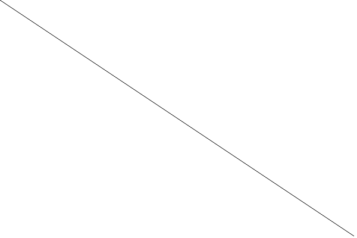
Draw figure components
For most of the time, the chart should have many components, such as the axis, the mesh grid, etc. The ChartContext type is able to draw those component automatically.
Mesh
The following code demonstrate how we can use ChartContext::configure_mesh to add a mesh to the chart.
use plotters::prelude::*; fn main() { let root_drawing_area = BitMapBackend::new("images/2.2.png", (600, 400)) .into_drawing_area(); root_drawing_area.fill(&WHITE).unwrap(); let mut ctx = ChartBuilder::on(&root_drawing_area) .build_cartesian_2d(0..100, 0..100) .unwrap(); ctx.configure_mesh().draw().unwrap(); }
And this code should produce the following result.
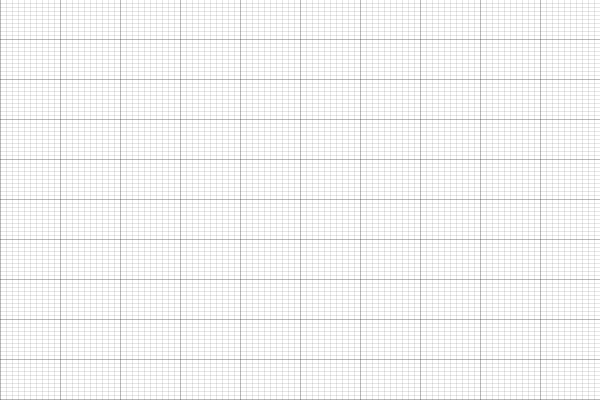
Axes
To add axes to the plot, it requires two steps:
- Define the label area size when the
ChartContextis created. - Use
configure_meshto draw the chart components.
The following code demonstrates how to add axes
use plotters::prelude::*; fn main() { let root_drawing_area = BitMapBackend::new("images/2.3.png", (600, 400)) .into_drawing_area(); root_drawing_area.fill(&WHITE).unwrap(); let mut ctx = ChartBuilder::on(&root_drawing_area) // enables Y axis, the size is 40 px .set_label_area_size(LabelAreaPosition::Left, 40) // enable X axis, the size is 40 px .set_label_area_size(LabelAreaPosition::Bottom, 40) .build_cartesian_2d(0..100, 0..100) .unwrap(); ctx.configure_mesh().draw().unwrap(); }
The code above will result:
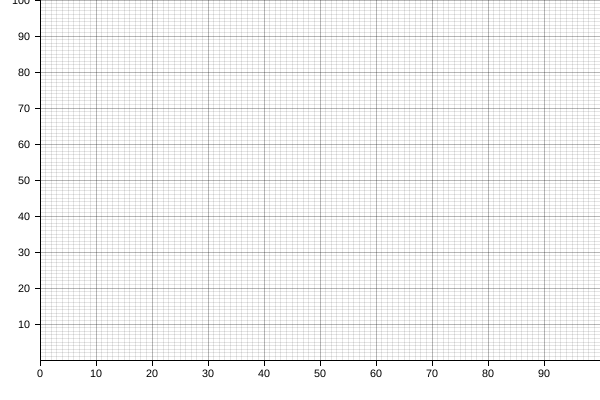
Title
The following example shows how to add title to the plot with ChartBuilder::caption.
In Plotters the most common way to represent a font is use a tuple of font face name and font size.
use plotters::prelude::*; fn main() { let root_drawing_area = BitMapBackend::new("images/2.4.png", (600, 400)) .into_drawing_area(); root_drawing_area.fill(&WHITE).unwrap(); let mut ctx = ChartBuilder::on(&root_drawing_area) .caption("Figure Sample", ("Arial", 30)) .set_label_area_size(LabelAreaPosition::Left, 40) .set_label_area_size(LabelAreaPosition::Bottom, 40) .build_cartesian_2d(0..100, 0..100) .unwrap(); ctx.configure_mesh().draw().unwrap(); }
The code above will result:
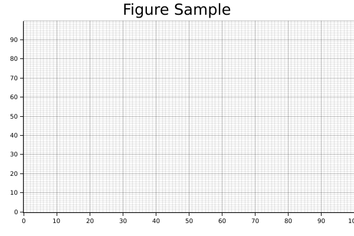
Basic data plotting
In this section, let's use Plotters to produce different types of Plotting. Generally speaking, the API ChartContext::draw_series provides the functionality to draw any types of chart. In the following parts, let's discuss how to use it to render different types of plots.
Line series
The following code demonstrate how to draw a line series with Plotters
use plotters::prelude::*; fn main() { let root_area = BitMapBackend::new("images/2.5.png", (600, 400)) .into_drawing_area(); root_area.fill(&WHITE).unwrap(); let mut ctx = ChartBuilder::on(&root_area) .set_label_area_size(LabelAreaPosition::Left, 40) .set_label_area_size(LabelAreaPosition::Bottom, 40) .caption("Line Plot Demo", ("sans-serif", 40)) .build_cartesian_2d(-10..10, 0..100) .unwrap(); ctx.configure_mesh().draw().unwrap(); ctx.draw_series( LineSeries::new((-10..=10).map(|x| (x, x* x)), &GREEN) ).unwrap(); }
It should produce the following image

Scatter Plot
The following code demonstrate how we can crate a scatter plot and use different pointing elements. In the example, we use Circle and TriangleMarker pointing element for two different series.
use plotters::prelude::*; fn main() { let root_area = BitMapBackend::new("images/2.6.png", (600, 400)) .into_drawing_area(); root_area.fill(&WHITE).unwrap(); let mut ctx = ChartBuilder::on(&root_area) .set_label_area_size(LabelAreaPosition::Left, 40) .set_label_area_size(LabelAreaPosition::Bottom, 40) .caption("Scatter Demo", ("sans-serif", 40)) .build_cartesian_2d(-10..50, -10..50) .unwrap(); ctx.configure_mesh().draw().unwrap(); ctx.draw_series( DATA1.iter().map(|point| TriangleMarker::new(*point, 5, &BLUE)), ) .unwrap(); ctx.draw_series(DATA2.iter().map(|point| Circle::new(*point, 5, &RED))) .unwrap(); } const DATA1: [(i32, i32); 30] = [(-3, 1), (-2, 3), (4, 2), (3, 0), (6, -5), (3, 11), (6, 0), (2, 14), (3, 9), (14, 7), (8, 11), (10, 16), (7, 15), (13, 8), (17, 14), (13, 17), (19, 11), (18, 8), (15, 8), (23, 23), (15, 20), (22, 23), (22, 21), (21, 30), (19, 28), (22, 23), (30, 23), (26, 35), (33, 19), (26, 19)]; const DATA2: [(i32, i32); 30] = [(1, 22), (0, 22), (1, 20), (2, 24), (4, 26), (6, 24), (5, 27), (6, 27), (7, 27), (8, 30), (10, 30), (10, 33), (12, 34), (13, 31), (15, 35), (14, 33), (17, 36), (16, 35), (17, 39), (19, 38), (21, 38), (22, 39), (23, 43), (24, 44), (24, 46), (26, 47), (27, 48), (26, 49), (28, 47), (28, 50)];
And this will produce the following image.

Area chart
The following demo demonstrate how we can draw an area chart.
use plotters::prelude::*; fn main() { let root_area = BitMapBackend::new("images/2.7.png", (600, 400)) .into_drawing_area(); root_area.fill(&WHITE).unwrap(); let mut ctx = ChartBuilder::on(&root_area) .set_label_area_size(LabelAreaPosition::Left, 40) .set_label_area_size(LabelAreaPosition::Bottom, 40) .caption("Scatter Demo", ("sans-serif", 40)) .build_cartesian_2d(0..10, 0..50) .unwrap(); ctx.configure_mesh().draw().unwrap(); let data = [25, 37, 15, 32, 45, 33, 32, 10, 29, 0, 21]; ctx.draw_series( AreaSeries::new( (0..).zip(data.iter().map(|x| *x)), // The data iter 0, // Baseline &RED.mix(0.2) // Make the series opac ).border_style(&RED) // Make a brighter border ) .unwrap(); }
Result image:

Histogram
In practice, the histogram can be two things:
- A bar plot
- Or a bar plot that shows the distribution of values
For a bar plot, we can simply create with a iterator that yields a series of rectangle. The following code demonstrates how. The function Rectangle::margin is used to set a pixel based margin for the rectangle element.
One note here is we used tweaked the coordinate a little bit, we make the X coordinate segmented, so that the axis labels presents in the middle of the value segments. In plotters this is called a coordinate combinator, we are going to discuss the combinators in detail in the next chapter.
use plotters::prelude::*; fn main() { let root_area = BitMapBackend::new("images/2.8.png", (600, 400)) .into_drawing_area(); root_area.fill(&WHITE).unwrap(); let mut ctx = ChartBuilder::on(&root_area) .set_label_area_size(LabelAreaPosition::Left, 40) .set_label_area_size(LabelAreaPosition::Bottom, 40) .caption("Bar Demo", ("sans-serif", 40)) .build_cartesian_2d((0..10).into_segmented(), 0..50) .unwrap(); ctx.configure_mesh().draw().unwrap(); let data = [25, 37, 15, 32, 45, 33, 32, 10, 0, 21, 5]; ctx.draw_series((0..).zip(data.iter()).map(|(x, y)| { let x0 = SegmentValue::Exact(x); let x1 = SegmentValue::Exact(x + 1); let mut bar = Rectangle::new([(x0, 0), (x1, *y)], RED.filled()); bar.set_margin(0, 0, 5, 5); bar })) .unwrap(); }
Result image:

Similarly, the following code draws a vertical bar chart.
use plotters::prelude::*; fn main() { let root_area = BitMapBackend::new("images/2.9.png", (600, 400)) .into_drawing_area(); root_area.fill(&WHITE).unwrap(); let mut ctx = ChartBuilder::on(&root_area) .set_label_area_size(LabelAreaPosition::Left, 40) .set_label_area_size(LabelAreaPosition::Bottom, 40) .caption("Bar Demo", ("sans-serif", 40)) .build_cartesian_2d(0..50, (0..10).into_segmented()) .unwrap(); ctx.configure_mesh().draw().unwrap(); let data = [25, 37, 15, 32, 45, 33, 32, 10, 0, 21, 5]; ctx.draw_series((0..).zip(data.iter()).map(|(y, x)| { let mut bar = Rectangle::new([ (0, SegmentValue::Exact(y)), (*x, SegmentValue::Exact(y + 1)) ], GREEN.filled()); bar.set_margin(5, 5, 0, 0); bar })) .unwrap(); }
Result image:

For the second type of histogram, there's a Histogram series type is defined for this purpose.
Visualize distribution
Now we are going to demonstrate how we can use the Histogram series to visualize the distribution of the input data.
use plotters::prelude::*; fn is_prime(n: i32) -> bool { for i in 2..n { if n % i == 0 { return false; } } true } fn main() { let root_area = BitMapBackend::new("images/2.13.png", (600, 400)) .into_drawing_area(); root_area.fill(&WHITE).unwrap(); let mut ctx = ChartBuilder::on(&root_area) .set_label_area_size(LabelAreaPosition::Left, 40) .set_label_area_size(LabelAreaPosition::Bottom, 40) .caption("Prime Distribution", ("sans-serif", 40)) .build_cartesian_2d([true, false].into_segmented(), 0..50) .unwrap(); ctx.configure_mesh().draw().unwrap(); let prim:Vec<_> = (2..50).map(is_prime).collect(); ctx.draw_series( Histogram::vertical(&ctx) .margin(100) .data(prim.iter().map(|x| (x, 1))) ).unwrap(); }
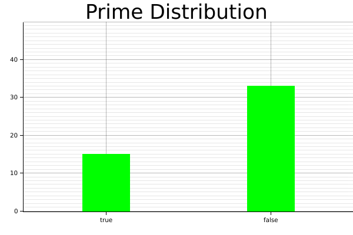
Time Series Chart
In theory Plotters supports any data type to be axis. The only requirement is to implement the axis mapping traits. By default, Plotters has built-in implementation of axis traits for date and time types. To make a time series chart, you should first import the chrono crate and define a time range as axis. The following example shows how we can plot a time series data.
use plotters::prelude::*; use chrono::{Utc, TimeZone}; fn main() { let root_area = BitMapBackend::new("images/2.11.png", (600, 400)) .into_drawing_area(); root_area.fill(&WHITE).unwrap(); let start_date = Utc.ymd(2019, 10, 1); let end_date = Utc.ymd(2019, 10, 18); let mut ctx = ChartBuilder::on(&root_area) .set_label_area_size(LabelAreaPosition::Left, 40) .set_label_area_size(LabelAreaPosition::Bottom, 40) .caption("MSFT daily close price", ("sans-serif", 40)) .build_cartesian_2d(start_date..end_date, 130.0..145.0) .unwrap(); ctx.configure_mesh().draw().unwrap(); ctx.draw_series( LineSeries::new( (0..).zip(DATA.iter()).map(|(idx, price)| { let day = (idx / 5) * 7 + idx % 5 + 1; let date = Utc.ymd(2019,10, day); (date, *price) }), &BLUE, ) ).unwrap(); } const DATA: [f64; 14] = [ 137.24, 136.37, 138.43, 137.41, 139.69, 140.41, 141.58, 139.55, 139.68, 139.10, 138.24, 135.67, 137.12, 138.12];
Result image:

Customized series
Plotters allows you draw arbitrary types of series, even the one isn't built into the Plotters crate. Plotters uses a really simple abstraction for a data series: An iterator of drawable elements. Thus if you can make your own series an iterator of drawable element, it's a valid data series and can be draw on a figure.
Multiple Data Series
By calling draw_series multiple time, Plotters is able to produce the multiple series plot. Thus, we don't limit the developer's ability to put different types of plot series onto the same plot. The following example shows plotting a histogram along with a line plot.
use plotters::prelude::*; fn main() { let root_area = BitMapBackend::new("images/2.10.png", (600, 400)) .into_drawing_area(); root_area.fill(&WHITE).unwrap(); let mut ctx = ChartBuilder::on(&root_area) .set_label_area_size(LabelAreaPosition::Left, 40) .set_label_area_size(LabelAreaPosition::Bottom, 40) .caption("Histo + Line", ("sans-serif", 40)) .build_cartesian_2d(0..10, 0..80) .unwrap(); ctx.configure_mesh().draw().unwrap(); let data = [25, 37, 15, 32, 45, 33, 32, 10, 0, 21]; // Draw the histogram ctx.draw_series((0..).zip(data.iter()).map(|(x, y)| { let mut bar = Rectangle::new([(x, 0), (x + 1, *y)], GREEN.filled()); bar.set_margin(0, 0, 5, 5); bar })) .unwrap(); // Draw the line series ctx.draw_series(LineSeries::new( (0..).zip(data.iter()).map(|(x, y)| (x, *y + 30)), &BLUE, )) .unwrap(); }
Result image:

Legend
Plotters allows user add legend on the figure. Specifically, Plotters called the it "series label". When you call ChartContext::draw_series, a result type that carries a handle to a series annotation is returned and you can use it to add a series label to that. After you complete the data plotting, ChartContext::configure_series_label can be called to configure and draw the collections of series label. The following example demonstrate how.
use plotters::prelude::*; fn main() { let root_area = BitMapBackend::new("images/2.12.png", (600, 400)) .into_drawing_area(); root_area.fill(&WHITE).unwrap(); let mut ctx = ChartBuilder::on(&root_area) .set_label_area_size(LabelAreaPosition::Left, 40) .set_label_area_size(LabelAreaPosition::Bottom, 40) .caption("Legend", ("sans-serif", 40)) .build_cartesian_2d(-4.0..4.0, -1.2..1.2) .unwrap(); ctx.configure_mesh().draw().unwrap(); let x_kps: Vec<_> = (-80..80).map(|x| x as f64 / 20.0).collect(); ctx.draw_series(LineSeries::new(x_kps.iter().map(|x| (*x, x.sin())), &RED)) .unwrap() .label("Sine") .legend(|(x, y)| PathElement::new(vec![(x, y), (x + 20, y)], &RED)); ctx.draw_series(LineSeries::new(x_kps.iter().map(|x| (*x, x.cos())), &BLUE)) .unwrap() .label("Cosine") .legend(|(x, y)| PathElement::new(vec![(x, y), (x + 20, y)], &BLUE)); ctx.configure_series_labels() .border_style(&BLACK) .background_style(&WHITE.mix(0.8)) .draw() .unwrap(); }
Result image:

Multipanel figures
Splitting drawing areas
Plotters can support multiple panel figures very easily by splitting the drawing area into sub-drawing areas. The following code demonstrate how the drawing area is splitted.
use plotters::prelude::*; fn main() { let root = BitMapBackend::new("images/split-drawing-area.png", (640, 480)).into_drawing_area(); // We can split to left panel and right panel 25% left, 75% right let (left, right) = root.split_horizontally((25).percent_width()); left.fill(&YELLOW).unwrap(); // We can also split upper and lower panel let (upper, lower) = right.split_vertically(240); upper.fill(&BLUE).unwrap(); // Then we can split the lower area evenly to 3 row 2 col let lower_areas = lower.split_evenly((2, 3)); for (id, area) in lower_areas.into_iter().enumerate() { area.fill(&Palette99::pick(id)).unwrap(); } }
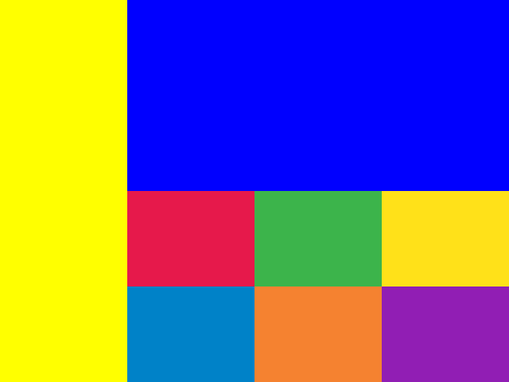
Creating multi-panel figures
With child drawing area, we can easily render multi-panel figures. Here's an example for making multi-panel figures:
use plotters::prelude::*; fn main() { let root = BitMapBackend::new("images/multi-panel-figure.png", (640, 480)).into_drawing_area(); root.fill(&WHITE).unwrap(); let (upper, lower) = root.split_vertically((80).percent()); let mut upper_chart = ChartBuilder::on(&upper) .set_label_area_size(LabelAreaPosition::Left, 30) .set_label_area_size(LabelAreaPosition::Right, 30) .set_label_area_size(LabelAreaPosition::Top, 30) .build_cartesian_2d(0.0..10.0, -1.0..1.0) .unwrap(); upper_chart.configure_mesh().draw().unwrap(); upper_chart.draw_series(LineSeries::new( (0..100).map(|x| x as f64 / 10.0).map(|x| (x, x.sin())), &BLACK, )).unwrap(); let mut lower_chart = ChartBuilder::on(&lower) .set_label_area_size(LabelAreaPosition::Left, 30) .set_label_area_size(LabelAreaPosition::Right, 30) .build_cartesian_2d(0.0..10.0, -1.0..1.0) .unwrap(); lower_chart.configure_mesh().draw().unwrap(); lower_chart.draw_series( (0..100) .map(|x| x as f64 / 10.0) .map(|x| { let color = if x.cos() > 0.0 { RED.mix(0.3).filled() } else {GREEN.mix(0.3).filled()}; Rectangle::new([(x, 0.0), (x + 0.1, x.cos())], color) }) ).unwrap(); }
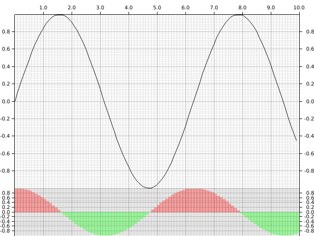
Draw 3D plots
Plotters also allows rendering 3D figures. Instead of using build_cartesian_2d, 3D plots are build with ChartBuilder by calling build_cartesian_3d method. Similar to the 2D figures, Plotters also can draw basic components for 3D charts.
3D plotting environment && basic figure component
This following example demonstrate how to build a basic 3d plotting environment. Unlike 2d chart context, you need to configure configure_axes to build the basic component.
use plotters::prelude::*; fn main() { let root = BitMapBackend::new("images/3d-env.png", (640, 480)).into_drawing_area(); root.fill(&WHITE).unwrap(); let mut chart = ChartBuilder::on(&root) .margin(20) .caption("Empty 3D Figure", ("sans-serif", 40)) .build_cartesian_3d(0.0..1.0, 0.0..1.0, 0.0..1.0) .unwrap(); chart.configure_axes().draw().unwrap(); }
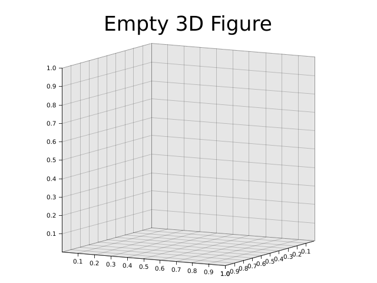
Draw a line series
In 3D plotting environment, you can draw a line series in the same way.
use plotters::prelude::*; fn main() { let root = BitMapBackend::new("images/3d-line.png", (640, 480)).into_drawing_area(); root.fill(&WHITE).unwrap(); let mut chart = ChartBuilder::on(&root) .margin(20) .caption("3D Line", ("sans-serif", 40)) .build_cartesian_3d(-1.0..1.0, -1.0..1.0, -1.0..1.0) .unwrap(); chart.configure_axes().draw().unwrap(); chart.draw_series(LineSeries::new( (-100..100).map(|y| y as f64 / 100.0).map(|y| ((y * 10.0).sin(), y, (y * 10.0).cos())), &RED )).unwrap(); }

Draw a 3D bar chart
Note: This is currently only avaiable with developement version of plotters
Next, we are going to deomonstrate Plotters' 3D elements. We use the Cubiod 3D element to build a 3D bar chart.
use plotters_master::prelude::*; fn main() { let root = BitMapBackend::new("images/3d-bar.png", (640, 480)).into_drawing_area(); root.fill(&WHITE).unwrap(); let mut chart = ChartBuilder::on(&root) .margin(20) .caption("3D Bar", ("sans-serif", 40)) .build_cartesian_3d(0i32..10, -10i32..10, 0i32..10) .unwrap(); chart.configure_axes().draw().unwrap(); chart.draw_series( (0i32..10i32) .map(|x| std::iter::repeat(x).zip(0i32..10)) .flatten() .map(|(x,z)| { Cubiod::new([(x, 0, z), (x + 1, x - z, z + 1)], BLUE.filled(), &BLACK) }) ).unwrap(); }
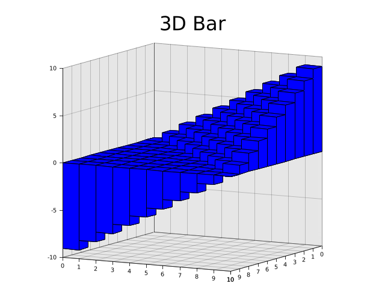
3D Surface
We can draw 3d surface as well by drawing a series of polygon. Here's an example of how to draw a surface plot.
use plotters::prelude::*; fn main() { let root = BitMapBackend::new("images/3d-surface.png", (640, 480)).into_drawing_area(); root.fill(&WHITE).unwrap(); let mut chart = ChartBuilder::on(&root) .margin(20) .caption("3D Surface", ("sans-serif", 40)) .build_cartesian_3d(-3.0..3.0, -3.0..3.0, -3.0..3.0) .unwrap(); chart.configure_axes().draw().unwrap(); let mut data = vec![]; for x in (-25..25).map(|v| v as f64 / 10.0) { let mut row = vec![]; for z in (-25..25).map(|v| v as f64 / 10.0) { row.push((x, (x * x + z * z).cos(), z)); } data.push(row); } chart.draw_series( (0..49) .map(|x| std::iter::repeat(x).zip(0..49)) .flatten() .map(|(x,z)| { Polygon::new(vec![ data[x][z], data[x+1][z], data[x+1][z+1], data[x][z+1], ], &BLUE.mix(0.3)) }) ).unwrap(); }
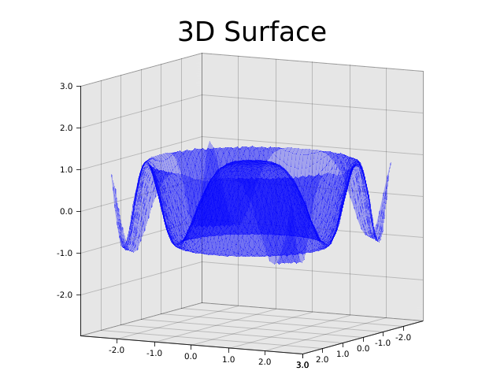
Drawing with surface series
Note: This feature is only avaiable in development version
use plotters_master::prelude::*; fn main() { let root = BitMapBackend::new("images/3d-surface-series.png", (640, 480)).into_drawing_area(); root.fill(&WHITE).unwrap(); let mut chart = ChartBuilder::on(&root) .margin(20) .caption("3D Surface", ("sans-serif", 40)) .build_cartesian_3d(-3.0..3.0, -3.0..3.0, -3.0..3.0) .unwrap(); chart.configure_axes().draw().unwrap(); chart.draw_series(SurfaceSeries::xoz( (-25..25).map(|v| v as f64 / 10.0), (-25..25).map(|v| v as f64 / 10.0), |x:f64,z:f64|(x * x + z * z).cos()).style(&BLUE.mix(0.2)) ).unwrap(); }
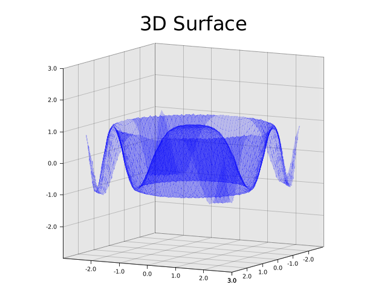
Customize perspective matrix
Plotters also allows user override the default prespective matrix, by doing so, you can zoom and rotate the 3d figure. The following example demostrate how.
use plotters::prelude::*; fn main() { let root = BitMapBackend::new("images/3d-matrix.png", (640, 480)).into_drawing_area(); root.fill(&WHITE).unwrap(); let mut chart = ChartBuilder::on(&root) .margin(20) .build_cartesian_3d(-1.0..1.0, -1.0..1.0, -1.0..1.0) .unwrap(); // You need configure the projection matrix before start drawing anything chart.with_projection(|mut pb| { pb.pitch = 1.2; pb.yaw = 0.5; pb.scale = 0.7; pb.into_matrix() }); chart.configure_axes().draw().unwrap(); chart.draw_series(LineSeries::new( (-100..100).map(|y| y as f64 / 100.0).map(|y| ((y * 10.0).sin(), y, (y * 10.0).cos())), &RED )).unwrap(); }
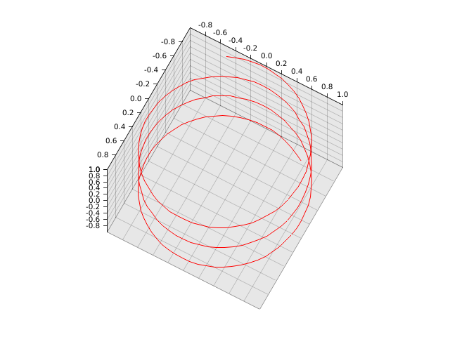
Animation and realtime rendering
All the previous examples is static rendered images, in this part, we are going to show how to generate realtime or animated plots. To render a realtime or animated figure, you need to redraw the figure periodically: For a animated plot, you should render each frame, while for a GUI integration, you should handle the redraw request.
The realtime rendering semantics for Plotters is supported by the API DrawingBackend::present, which means we tell the drawing backend we are finishing drawing the current frame. The following drawing will belongs to the next frame.
At the same time, you need a backend that supports realtime rendering. When GIF support is enabled, the default BitMapBackend is able to produce animated images. The following example shows show.
use plotters::prelude::*; fn main() { let area = BitMapBackend::gif( "images/animated.gif", (320, 100), 1_000 /* Each frame show 1s */ ).unwrap().into_drawing_area(); for i in 0..=10 { area.fill(&WHITE).unwrap(); area.draw( &Text::new( format!("{}", 10 - i), (100, 20), ("sans-serif", 80) ) ).unwrap(); area.present().unwrap(); } }
Similarly when Plotters is integrated to a GUI framework, all you need to do is redraw the figure and call present after the plot rendering.
Tweaking the figure
In previous parts, we learned how to create data visualization with Plotters. In this part, we are going to show how to customize the data visualization and tweak the plot appearance.
Layout Tweaks
Label area size
To build a chart in Plotters, you need first define the axis specification and the dimension of the label areas. When a ChartBuilder is created, the label area size is set to 0, which means Plotters shouldn't draw the axis and tick marks. You can tweak the label area size with ChartBuilder::set_label_area_size.
use plotters::prelude::*; fn main() { let root = BitMapBackend::new("images/label-area-size.png", (640, 480)).into_drawing_area(); root.fill(&WHITE).unwrap(); let (left, right) = root.split_horizontally(320); let mut left_chart = ChartBuilder::on(&left) .margin(15) .set_label_area_size(LabelAreaPosition::Left, 30) .set_label_area_size(LabelAreaPosition::Bottom, 30) .build_cartesian_2d(0..100, 0..100) .unwrap(); let mut right_chart = ChartBuilder::on(&right) .margin(15) .set_label_area_size(LabelAreaPosition::Right, 30) .set_label_area_size(LabelAreaPosition::Bottom, 50) .build_cartesian_2d(0..100, 0..100) .unwrap(); left_chart.configure_mesh().draw().unwrap(); right_chart.configure_mesh().draw().unwrap(); }
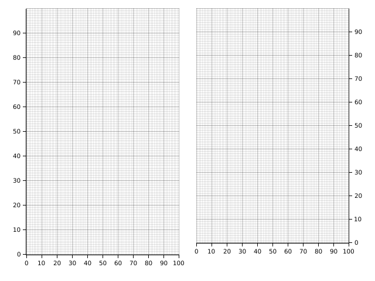
Floating label area
Sometimes we want our axis is drawn on the top of the plot area, this can be done if you set label area size to negative.
use plotters::prelude::*; fn main() { let root = BitMapBackend::new("images/axis-overlapping-with-plot.png", (640, 480)).into_drawing_area(); root.fill(&WHITE).unwrap(); let mut chart = ChartBuilder::on(&root) .margin(15) .set_label_area_size(LabelAreaPosition::Left, -300) .set_label_area_size(LabelAreaPosition::Top, -30) .build_cartesian_2d(0..100, 0..100) .unwrap(); chart.configure_mesh() .set_tick_mark_size(LabelAreaPosition::Left, 5) .draw().unwrap(); }
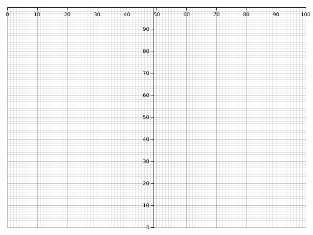
Overlapped charts
We have learned how to split the parent drawing area into some sub-drawing-area. But in some case, we want to intentionally set one chart on the top of another. This can be done by DrawingArea::shirnk. The following example demonstrates how.
use plotters::prelude::*; fn main() { let root = BitMapBackend::new("images/overlapped.png", (640, 480)).into_drawing_area(); root.fill(&WHITE).unwrap(); let small_area = root.clone().shrink( (300, 300), (100, 100) ); let mut chart = ChartBuilder::on(&root) .margin(15) .set_label_area_size(LabelAreaPosition::Left, 30) .set_label_area_size(LabelAreaPosition::Bottom, 30) .build_cartesian_2d(0..100, 0..100) .unwrap(); chart.configure_mesh().disable_mesh().draw().unwrap(); let mut small_chart = ChartBuilder::on(&small_area) .set_label_area_size(LabelAreaPosition::Left, 15) .set_label_area_size(LabelAreaPosition::Bottom, 15) .build_cartesian_2d(0..10, 0..10) .unwrap(); small_chart.configure_mesh().draw().unwrap(); }
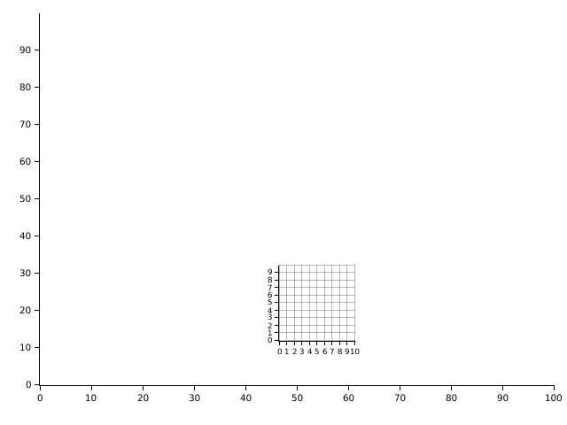
Font, color and styles
Axis, mesh and label tweaks
- Adjust number of tick marks on axis
- Changing axis, labels and mesh styles
- Partially visible axis
- Label formatters
- Inward labels
- Log scale axis